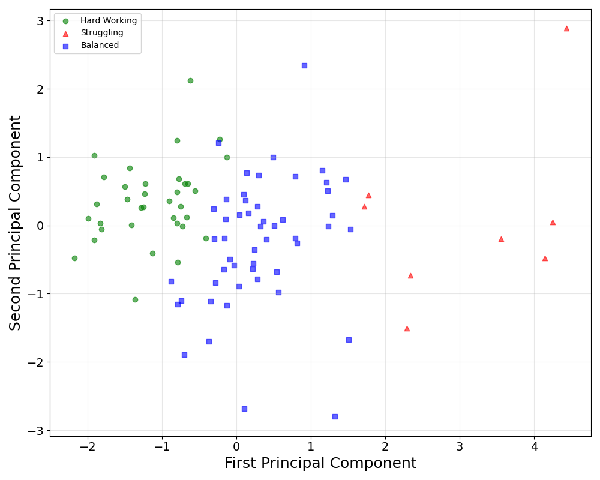
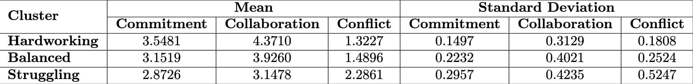

[comment]: # (Compile this presentation with the command below) [comment]: # (mdslides index.md && mv index/index.html .) [comment]: # (The list of themes is at https://revealjs.com/themes/) [comment]: # (The list of code themes is at https://highlightjs.org/) [comment]: # (Pass optional settings to reveal.js:) [comment]: # (markdown: { smartypants: true }) [comment]: # (Other settings are documented at https://revealjs.com/config/) ### GitDash #### A Data-Driven Dashboard for Monitoring Team Progress in Software Engineering Education ---------- Rahul Bijoor & Kevin Buffardi California State University, Chico </img> [LearnByFailure.com](https://learnbyfailure.com/) <sub>[LearnByFailure.com](https://learnbyfailure.com/future-software-engineers/)</sub>
#### Motivation **Software Engineering Education** - Team projects, professional practices - Need to manage several distinct teams - How to evaluate fairly for teams and individuals - Difficulties at scale - Delay in feedback loops
#### Motivation **Traditional Evalution** - Peer/Self evaluation - Subjective, easy to manipulate - Tallying contributions (lines of code, commits, etc.) - Campbell/Goodhart law: social metrics create perverse metrics
#### Motivation **Opportunity** - Need for **automated, real-time** insights into teams - GitHub provides rich activity data - Commits - Issues (bug/feature documentation) - Pull Requests - Code Reviews - Comments
#### Motivation **Opportunity** - Median contributor's frequency of *any* contribution predicts both **team cohesion** and **lack of conflict** [(Buffardi, et al., 2025)](https://dl.acm.org/doi/abs/10.1145/3724363.3729039) - Design a dashboard to monitor teams/individuals to identify "teachable moments"
#### Classifying teams - Post-Hoc analysis - **10 years** of undergraduate Software Engineering class - [GitHub API](https://docs.github.com/) data - **19,095 artifacts** from **94 teams** with **465 unique students** - [CATME](https://www.catme.org/) team evaluations
#### Classifying teams <p></p> </img>
#### Classifying teams <p></p> </img>
#### Dashboard Design - Analysis motivated dashboard design that combines: - GitHub activity (commits, issues, PRs, etc.) - Team evaluation (CATME-based) classifications - Dashboard views: - Weekly Activity - Team Analysis - Member Insights
#### Dashboard Design - Open source software: [rahulbijoor/GitDash](https://github.com/rahulbijoor/GitDash) - Demo on [local host](http://localhost:8501/)
#### Limitations - GitHub activity may not fully represent actual effort (e.g., offline work or non-code contributions) - Outliers or inactive team members (students who drop off the class) can skew average-based metrics - Factors other than Collaboration, Commitment, and Conflict influencing team dynamics.
#### Future Work - Deploy in real class environment to observe the behavioural changes. - Test other clustering methods/data - Apply in diverse educational contexts
#### GitDash <small>This presentation is accessible at [learnbyfailure.com/gitdash-ccsc25/](https://learnbyfailure.com/gitdash-ccsc25/) and its source is available on [GitHub](https://github.com/kbuffardi/gitdash-ccsc25).</small> <small>Special thanks to [Rahul Bijoor](https://www.linkedin.com/in/rahul-bijoor/) who lead the research and development for this paper while a Masters student at Chico State</small> </img> <small>[Back to LearnByFailure](https://learnbyfailure.com/research/) </small>